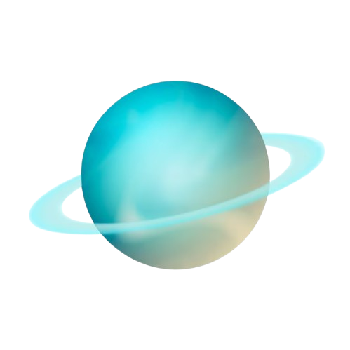

أورانوس هو الكوكب السابع من الشمس ويُعرف بلونه الأزرق الذي يعود إلى غاز الميثان في غلافه الجوي. يُعتبر أورانوس كوكبًا غازيًا عملاقًا ويمتاز بمدار مائل بشكل كبير، مما يجعل محوره مائلًا بشكل غير عادي.
يمتلك أورانوس نظامًا من الحلقات الضعيفة وأكثر من 27 قمرًا، ومن أبرزها "تيتانيا" و"أوبيرون".
